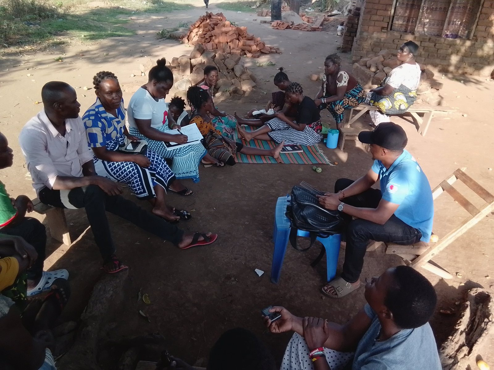
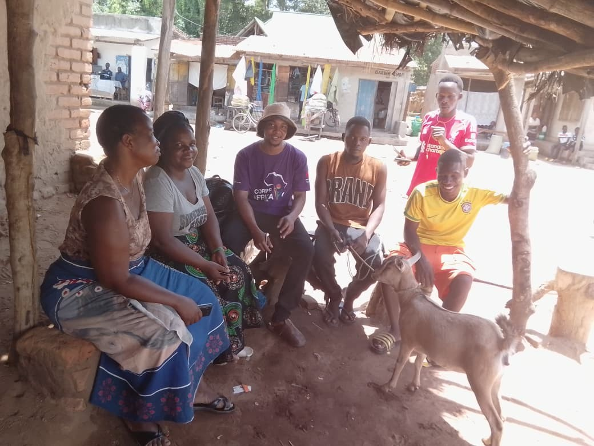
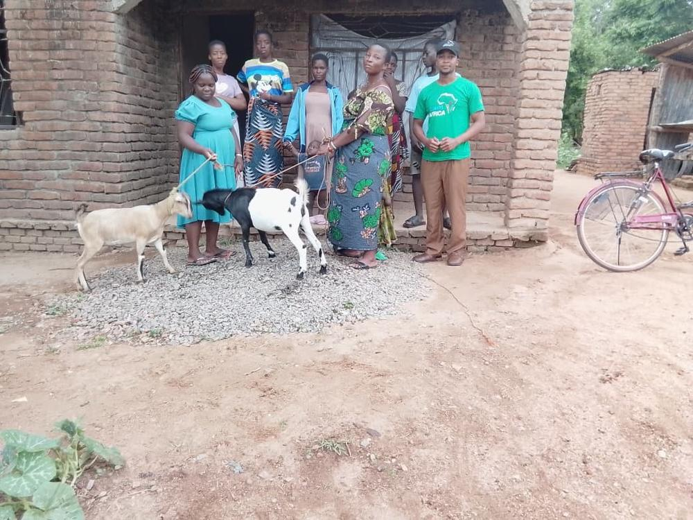

Goat pass-on scheme, launched and scaled
A livestock model where every family passes offspring on to the next, so one investment keeps reaching new households long after the project ends.




The problem
Members of the Chitemwano Youth and Women's Club had skills and willingness, but no productive assets. Without something to build on, there was no way to earn income outside the farming season.
Goats breed quickly, sell easily and need little land, which made them a practical first asset that could grow on its own.
How we did it
The club and I chose the idea, set objectives and built the budget together.
With members and leaders, we agreed fair selection criteria and identified the first beneficiaries.
We trained 30 members in housing, feeding, disease prevention, breeding and record keeping.
The team bought healthy goats and handed them over under signed pass-on agreements.
We closed phase one, then wrote the proposal to scale it and added goats in phase two.
Impact
Planned against delivered
| Planned | Delivered |
|---|---|
| Train 30 youth and women in goat care | 30 trained: 20 youths and 10 women |
| Purchase goats for phase two | Goats purchased and distributed by agreed criteria |
| Agree a fair pass-on schedule | Schedule adopted with responsibilities and timelines |
| Build household assets and income | Members now own livestock; income will grow as the herd multiplies |
Beneficiaries by gender
Hover a section to see the numbers.
Phase two support by source
Total MWK 429,000. Hover a section to see the amount.
What went wrong, and what we did about it
No healthy goats nearby
Suitable goats were hard to find in the community. We widened the search to nearby communities and markets rather than accept weak animals.
Prices rose before purchase
Goat prices climbed above the budget estimate. We adjusted the timeline and held to the quality standard rather than buy cheaper, weaker animals.
The lesson I took forward
Assess the market early and line up several suppliers before buying. I applied this to procurement on the poultry project.
Built to last
Sales of offspring go back into the group for breeding stock, vaccines and feed. A chairperson and treasurer keep records and run regular reviews, and the pass-on schedule keeps it fair.
Members practise controlled grazing and use goat manure as fertiliser, so the project improves their fields too.
"I monitored the implementation of the Goat Pass-On Project and was impressed by both the organization of the activity and the active participation of beneficiaries."
James Kapiyira, Veterinary Officer